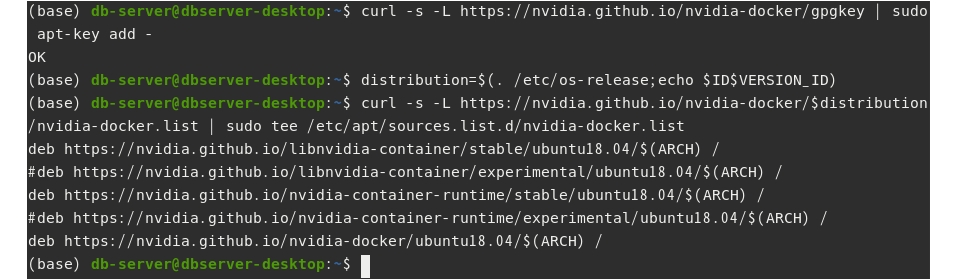

docker로 gpu기반 딥러닝 개발환경 구축하기
이 포스트는 여러 절로 구성되어 있습니다.
딥러닝 개발 환경을 구축하는 작업은 번거롭다. 프로젝트 별로 모델 개발 또는 구동 환경이 다를 수 있는데, 이 때마다 설정을 반복해야 한다. 물론 가상 환경을 사용하면 단일 서버에 여러 개의 개발 환경을 관리할 수 있다. 그러나 매번 환경 설정을 해야하는 불편함은 그대로다. 누군가 잘 만들어둔 환경 세팅을 가져와서 쓸 수 있다면, 시간을 단축 시킬 수 있을 것이다. 그리고 또 한가지. 여러 사람이 협업을 하는 프로젝트의 경우, 각자 개발 환경 통일이 되지 않는 다면 시행착오를 겪을 것이다. 구성원 간 개발 환경을 통일하는 작업 또한 골칫거리다. 한가지 더 예를 들어보자. 하나의 GPU 서버 자원을 여러 사람이 함께 사용해야하는 상황을 생각해보자. 누군가는 텐서플로를 사용하고, 다른 사람은 파이토치를 사용할 수도 있다. 사용하는 프레임워크의 버전, 라이브러리의 종류도 제각각이다. 각자 자신의 입맛에 맞는 가상환경을 설정하다보면 서버 시스템 환경이 지저분해질 수 있다.
도커를 사용하면 딥러닝 모델 개발 환경을 구축하는 것부터, 협업 환경을 통일하는 일까지 간편하게 마무리할 수 있다. 그리고 라이브러리들이 컨테이터 안에서 동작하기 때문에 서버 설정을 최소화 할 수 있다. 따라서 서버 자원에 손대는 작업을 최소화 할 수 있다. 마지막으로 한가지 변수만 남았다. 도커 컨테이터 안에서 gpu 자원에 접근 가능할까.
본 포스트에서는 도커를 사용해서 gpu 기반 딥러닝 프레임워크 개발환경을 구축하는 방법에 대해서 설명한다. Ubuntu 20.04, 엔비티어 RTX 3080 gpu 환경을 기준으로 설명한다. 하지만 WSL2 환경에서도 동일한 방법으로 환경구축이 가능하다. 도커는 이미 설치되어 있다고 가정하고 설명을 진행한다. 도커 및 WSL2 설정에 대한 설명은 다음 포스트를 참고하기 바란다.
1. nvidia 드라이버 설치
그래픽카드 드라이버 설치가 되어있지 않다면 설치를 진행한다. 서버에 장착된 그래픽카드에 설치가능한 드라이버 버전을 확인한다.
$ sudo ubuntu-drivers devices
위 화면 상에서 권장하는 드라이버는 nvidia-driver-470이다.
드라이버를 설치하는 방법은 두가지다. (자동/ 수동)
방법1) 권장 드라이버를 자동설치 하려면 다음과 같이 입력한다.
$ sudo ubuntu-drivers autoinstall
방법2) 원하는 버전을 수동으로 설치하려면 직접 드라이버 버전을 명시하면 된다.
예를 들어 nvidia-driver-470을 설치하고 싶다면 다음과 같이 입력한다.
$ sudo apt install nvidia-driver-470
여기서는 자동 설치로 진행했다.

설치 완료 후 시스템을 재부팅 한다.
$ sudo reboot
설치가 제대로 되었는지 확인한다.
$ apt --installed list | grep nvidia-driver
nvidia-driver-470이 설치되었다.
마지막으로 nvidia-smi 명령으로 gpu의 상태도 확인해본다.
$ nvidia-smi
2. 도커 설치(생략)
만약 도커가 설치되어 있지 않다면, 이전 포스트를 참고하여 설치를 완료한다.
3. 엔비디아 도커2 설치
엔비디아 도커(nvidia docker)의 정식 명칭은 NVIDIA Container Toolkit으로, 컨테이너 환경에서 gpu 자원을 가동할 수 있도록 돕는 툴킷이다. 이 툴킷을 사용하면 도커 컨테이너 환경에서 nvidia CUDA runtime을 사용할 수 있다.
그런데 도커 최신 버전(Docker-ce 19.03 이후 버전)에서는 nvidia CUDA runtime을 사용할 수 있도록 공식적으로 지원하고 있다. 다시 말해 엔비디아 도커 설치 필요 없이 컨테이너 내부에서 gpu를 구동할 수 있다. 하지만 docker에서 gpu를 사용하기 위한 명령어와 nvidia docker를 통해 gpu를 사용하기 위한 명령어는 약간의 차이가 있다. 엔비디아 도커를 추가로 설치한다고 문제가 되지는 않는다. 여기서는 엔비디아 도커2 버전을 설치해보도록 한다.
설치 전에 GPG 키를 추가하고 엔비디아 도커 원격저장소를 바라보도록 설정한다.
$ curl -s -L https://nvidia.github.io/nvidia-docker/gpgkey | sudo apt-key add -
$ distribution=$(. /etc/os-release;echo $ID$VERSION_ID)
$ curl -s -L https://nvidia.github.io/nvidia-docker/$distribution/nvidia-docker.list | sudo tee /etc/apt/sources.list.d/nvidia-docker.list

설치된 패키지 리스트를 업데이트 한다.
$ sudo apt-get update
엔비디아 도커를 설치한다.
$ sudo apt-get install -y nvidia-docker2
도커를 재시작한다.
$ sudo systemctl restart docker
정상적으로 설지되었는지 확인하기 위해 컨테이너 안에서 nvidia-smi 명령을 실행해본다. 앞에서도 언급한 바와 같이 네이티브 도커(Docker-ce 19.03 이후 버전) 명령으로 실행하는 방법과 엔비디아 도커를 사용하는 명령에 차이가 있다. 예를 들어 CUDA10.1 버전을 사용한 컨테이너를 생성하고 nvidia-smi 명령을 실행하기 위한 방법들은 다음과 같다.
- 방법1 : 네이티브 도커 사용
- docker run -it –gpus –rm nvidia/cuda:10.1-base nvidia-smi
- 방법2 : 엔비디아 도커 사용
- docker run –runtime=nvidia -it –rm nvidia/cuda:10.1-base nvidia-smi
- nvidia-docker run -it –rm nvidia/cuda:10.1-base nvidia-smi
네이티브 도커를 사용할 경우 --gpus 옵션을 사용하면 되고, 엔비디아 도커를 사용할 경우 --runtime=nvidia 옵션으로 지정하거나, nvidia-docker 명령으로 gpu 사용을 명시하면 된다.
위 세가지 중 한 가지를 입력해보자. 로컬 서버에 nvidia/cuda:10.1-base 도커 이미지가 없다면 원격으로 이미지를 가져온 후, 컨테이너를 생성하고 nvidia-smi 명령을 실행한다.
4. 컨테이너에서 딥러닝 프레임워크(pytorch) 구동하기
마지막으로 CUDA runtime이 탑재된 컨테이너에서 파이토치(pytorch)를 구동해보자.
미리 만들어진 이미지를 다운 받기 위해 웹브라우저로 도커 허브(Docker Hub)에 접속한다. 도커 허브는 도커 이미지를 저장하고 공유할 수 있도록 돕는 서비스이다. 만약 계정이 없다면 가입하고 로그인한다.
검색창에 pytorch/pytorch를 입력해서 파이토치 공식 저장소에 접근한다. 그리고 Tags를 클릭하면 다양한 버전, 다양한 CUDA runtime을 탑재한 이미지들을 확인할 수 있다. 여기서는 1.7.1-cuda11.0-cudnn8-runtime이미지를 가져오도록 한다.

터미널에서 docker pull 명령으로 이미지를 로컬 서버로 가져온다.
$ docker pull pytorch/pytorch:1.7.1-cuda11.0-cudnn8-runtime
그리고 docker images 명령으로 저장된 이미지 리스트를 확인해본다.
$ docker images
CUDA runtime을 사용한 도커 컨테이너를 구동한다. 그리고 python을 실행하고, 파이토치를 import하여 gpu 사용이 가능한지 확인해본다.
- 방법1 : 네이티브 도커 사용
$ docker run -it --gpus all pytorch/pytorch:1.7.1-cuda11.0-cudnn8-runtime
- 방법 2-1 : 엔비디아 도커 사용
$ docker run --runtime=nvidia -it all pytorch/pytorch:1.7.1-cuda11.0-cudnn8-runtime
- 방법 2-2 : 엔비디아 도커 사용
$ nvidia-docker run -it all pytorch/pytorch:1.7.1-cuda11.0-cudnn8-runtime